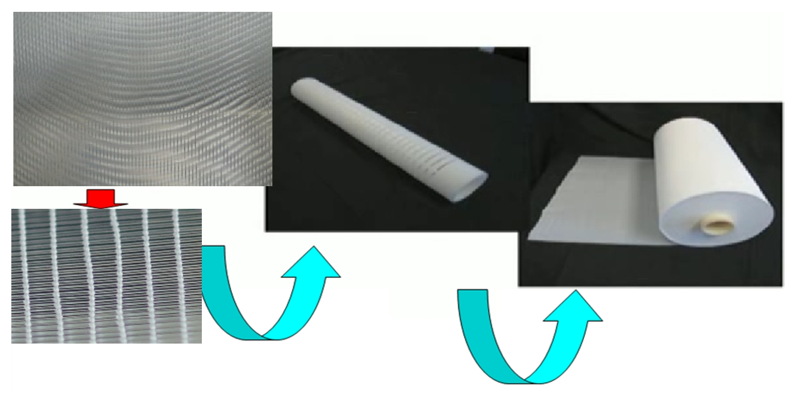
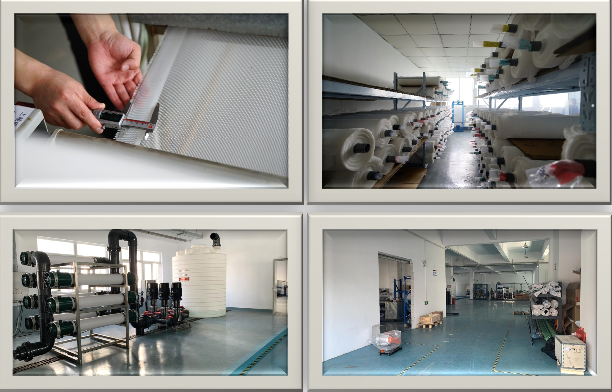
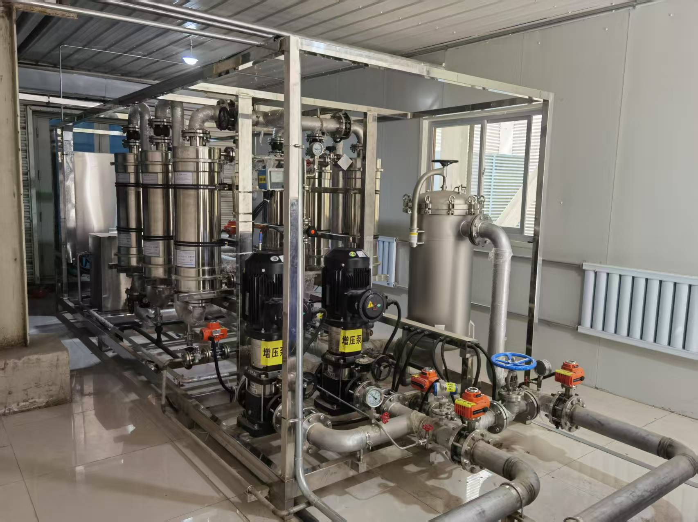
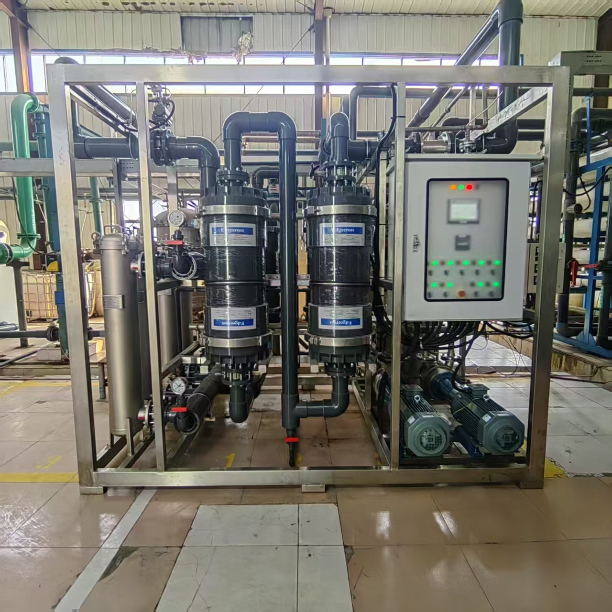

Membrane Contactor - Engineered and Manufactured
Our Membrane Contactor adopts a patented structure of "knit+central dispenser+baffle", which gives the membrane contactor module a specific surface area 27 times that of traditional towers and achieves over 10 times higher mass transfer efficiency.
Exploded View

Core Components

Membrane Contactor Overview

Hollow Fiber Membrane Filament

Membrane Tube Wall (Microscopic View)

Cross-section of Hollow Fiber
Manufacturing and On-Site Running Equipment

All our equipment is produced in a state-of-the-art, highly automated workshop, ensuring precision, consistency, and exceptional quality control.

Installed in a deaerator system

Installed in a decarbonization system